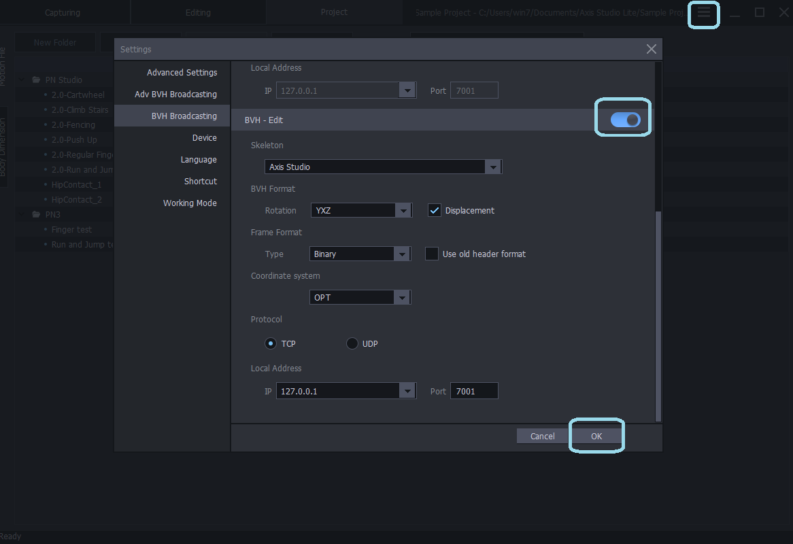
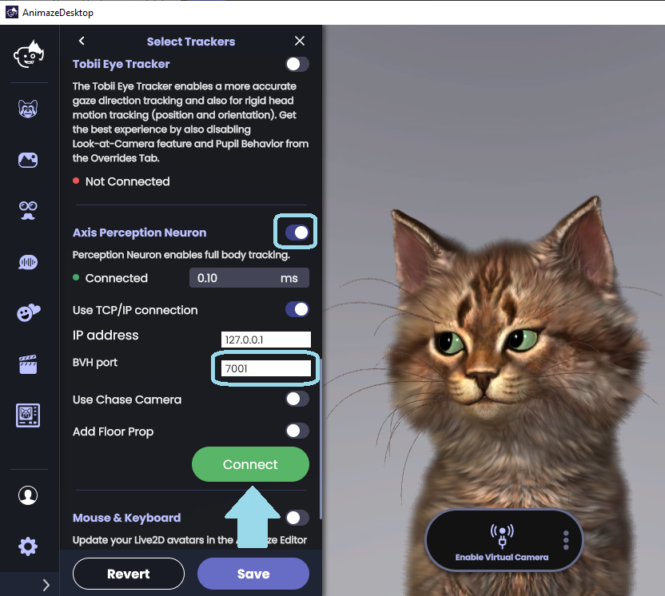
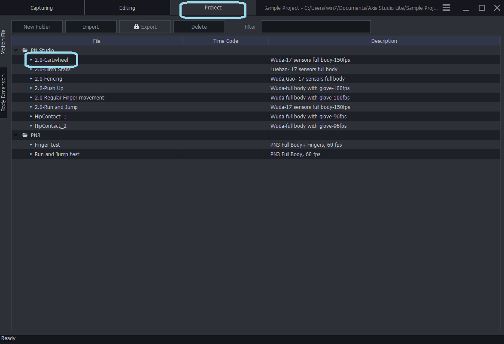
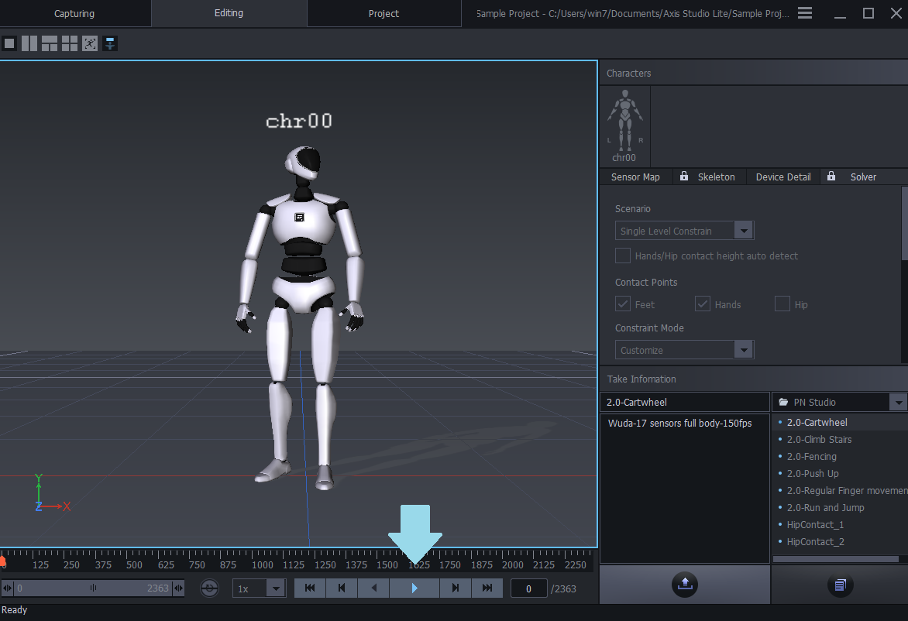

Animaze Desktop: How can I use Axis Perception Neuron in Animaze?
You can now use the Perception Neuron motion capture suit to animate and control avatars in Animaze. Here’s how you can do it:
Start off by downloading and installing the Axis Studio Lite from Neuron’s site: https://neuronmocap.com/content/axis-studio
Once the installation is done, launch Axis Studio Lite and go to Axis Studio Lite’s Settings menu (the three bars button next to the minimize button)
Click BVH Broadcasting and toggle the BVH Edit toggle ON and leave the rest of the settings as they are.

Launch Animaze and go to Settings > Advanced Tracking Configuration > Select Trackers and turn ON the Axis Perception Neuron tracker. Make sure that in the BVH port field it says 7001. After you’ve followed these steps, click Connect

Back in the Axis Studio Lite, click the Project tab, double click one of the existing projects, and then click the Play button to play the project. The Animaze avatar follows the dummy’s movements from the Axis Studio Lite project.

